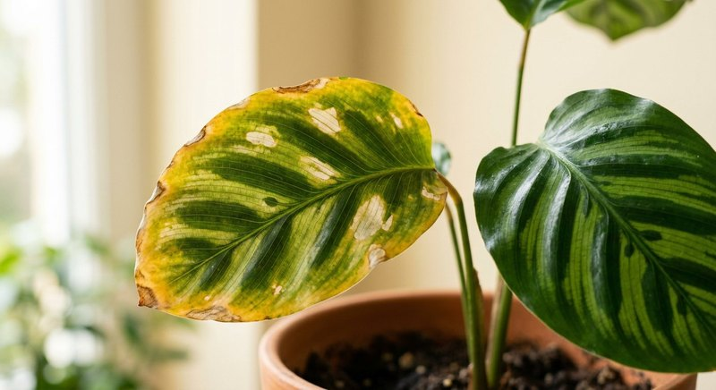

Проблемы растений · 4 мин чтения
Почему желтеют листья у комнатных растений: причины и проверка
Жёлтый лист — это симптом, а не готовый диагноз. Добавлять удобрение наугад рискованно: похожее пожелтение могут вызвать перелив, пересушка, недостаток света, вредители, естественное старение или проблемы корней.
Материал обновлён 24.10.2026 · Справочная информация, не заменяет инструкцию на упаковке.

Сначала определите масштаб и рисунок
Посмотрите, какие листья желтеют: один старый нижний лист или сразу много молодых. Проверьте, пожелтение равномерное или межжилковое, есть ли пятна, сухие края, липкость и паутинка. Сделайте фото, чтобы сравнить изменения через несколько дней.
Естественное старение нижнего листа возможно, если остальная часть растения здорова и продолжает расти. Массовые изменения, увядание или неприятный запах грунта требуют проверки полива и корней.
Проверьте воду, свет и вредителей
Потрогайте субстрат и проверьте дренаж. Постоянно мокрый грунт и вода в кашпо мешают корням; сильно пересушенный ком также вызывает стресс. Вспомните, не переставляли ли горшок и не изменились ли температура, освещение или полив.
Осмотрите обе стороны листьев и пазухи на вредителей. При их обнаружении действуйте по инструкции соответствующего средства защиты, отдельно от подкормки. Удобрение не является инсектицидом и не уничтожает болезнь.
Когда уместно думать о питании
Дефицит питания вероятнее, если растение активно растёт, давно не получало удобрений и другие условия в порядке. Но даже тогда отдельный симптом не подтверждает диагноз: избыток солей или неправильный pH может мешать усвоению элементов.
Не подкармливайте ослабленное растение концентрированным раствором. Сначала устраните явную проблему ухода. При возвращении к подкормке используйте дозировку с этикетки, а не случайный рецепт из интернета.
Пошаговая диагностика за десять минут
Жёлтый лист — симптом, а не диагноз, поэтому начните с осмотра по одному алгоритму. Проверьте влажность субстрата пальцем или деревянной шпажкой на глубине нескольких сантиметров: постоянно мокрый грунт при редком поливе говорит о проблемах с дренажом и корнями, а пересохший ком, отставший от стенок, — о хронической засухе. Затем посмотрите на дренажные отверстия и запах грунта: затхлость и тёмные мягкие корни важнее любых догадок про питание. Осмотрите нижнюю сторону листьев и пазухи на вредителей и паутинку, оцените, не переехало ли растение недавно в тень или под прямые лучи.
Запишите, какие именно листья желтеют. Единичный самый старый лист у основания при общем росте — часто естественная смена. Массовое пожелтение молодых листьев, межжилковый хлороз или жёлтые края при зелёной середине — разные картины, и лечатся они по-разному. Сравните свои наблюдения с материалом как понять, что растению не хватает питания: нехватка элементов лишь одна строка в списке причин, и далеко не самая частая в квартирах.
- влажность грунта на глубине, а не только сверху;
- дренаж, поддон и запах субстрата;
- корни через отверстия или при осторожном осмотре кома;
- нижняя сторона листьев: вредители, паутинка, налёт;
- свет и недавние перестановки, сквозняки, батарея рядом.
Что делать после того, как причина найдена
Исправляйте именно найденную причину и только её: при переливе дают субстрату просохнуть и налаживают дренаж, при засухе восстанавливают равномерный полив, при вредителях обрабатывают от вредителей. Удобрение в первые дни после такой диагностики обычно не нужно: ослабленные корни плохо усваивают питание, а соли добавляют стресс. К обычному графику возвращаются, когда растение снова показывает рост; как выстроить этот график, подскажет статья как часто подкармливать комнатные растения.
Отдельная ловушка — принять перекорм за голод и добавить ещё удобрения. Если перед пожелтением вы как раз увеличивали дозу или кормили чаще обычного, сверьтесь с признаками в материале перекорм удобрением: там другая первая помощь — пауза и пролив чистой водой. Уже пожелтевший лист обратно зелёным не станет; ориентируйтесь на новые листья: если они выходят нормального цвета, направление выбрано верно.
Фотографируйте растение раз в неделю с одной точки, пока исправляете причину. Снимки честно покажут, остановилось ли пожелтение на старых листьях и какого цвета выходит новый рост, — память в таких случаях заметно приукрашивает картину.
Частые вопросы
Жёлтые листья всегда означают, что растению не хватает удобрения?
Нет. Частые причины — ошибки полива, слабый свет, повреждение корней, вредители и естественное старение.
Можно ли подкормить растение для профилактики?
Не добавляйте удобрение без необходимости. Избыток питательных солей тоже способен повредить корни и листья.
Нужно ли срезать все жёлтые листья сразу?
Полностью жёлтые и сухие листья можно удалить чистым инструментом — растению они уже не помогают. Частично зелёные листья не спешите срезать: пока причина не исправлена, растение может тянуть из них ресурсы, а по динамике удобно следить за прогрессом.
Через сколько ждать улучшения после исправления полива?
Новые листья нормального цвета обычно показательнее старых. Дайте растению несколько недель стабильного режима и не меняйте всё одновременно, иначе не поймёте, что именно сработало.